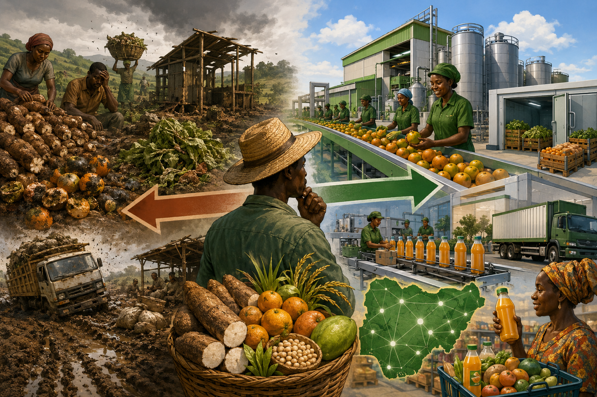

Benue Grows the Food. So Why Are We Still Importing What We Can Make?
The state feeds Nigeria. But can it feed its own people's pockets?
You know the story. Benue farmers wake up before the sun, till red earth, pray for rain, and deliver. Yam, cassava, rice, soybeans, oranges, mangoes—the state produces like it's showing off.
And the numbers back it up.
The International Institute of Tropical Agriculture (IITA) ranks Benue as the highest agricultural-producing state in Nigeria. Nigeria produces over 70% of the world's yams, and Benue alone accounts for over 51% of the country's total yam production.
Same story with cassava. Benue tops the chart, Kogi comes second. In citrus and soybean production, Benue is the undisputed leader. For soybean, the state produced over 200,000 metric tons in both 2022 and 2023.

But here's the part that doesn't add up.
The same state that grows all this food is the same one where farmers watch their harvest rot because nobody came to buy.
The Cycle That Hurts
Let's talk about post-harvest losses—fancy term for "food that never makes it to anyone's plate."
In Benue, it's brutal. A study on cassava farmers in Idoma land found that over 40% of post-harvest losses happen during processing and storage. Not pests. Not bad weather. Just no facilities to handle the abundance.
For leafy vegetable marketers in Makurdi, the situation is even clearer. 61% reported lack of proper storage facilities as a major cause of losses. 57% blamed high temperatures, 60% said contaminants and filthy environments, 56% pointed to pest and disease infestation.
The average value of post-harvest losses per marketer? ₦21,925.91. Their average returns? Just ₦31,645.4. That's almost 70% of their potential income disappearing into thin air.
For rice processors in the state, inadequate drying facilities alone account for losses of about 61.56 kg per 100 kg bag—that's over 25% of their product gone before it even reaches a buyer.
Now Flip It
Imagine if instead of watching oranges rot, a farmer could walk into a processing plant five minutes away. They weigh his oranges, pay him properly, and turn those fruits into juice, concentrate, or export-grade products.
That's not a dream anymore. It's happening—just not enough.
In June 2026, President Tinubu commissioned the Bensono Fruit Processing Plant in Makurdi, with a capacity of 40,000 metric tons per day. The plant is expected to generate thousands of direct and indirect jobs and reduce Nigeria's fruit concentrate import bill, which stood at about $68 million last year.
And the plant is expanding. Sono Group recently announced plans to increase capacity to 100,000 metric tons and introduce a new juice production line within six months.
The Benue State government also secured a ₦25 billion agricultural partnership for commercial soybean production, irrigation farming, and value-chain development. The goal? Position Benue not just as Nigeria's food basket but as a gateway to Africa's food future.
What's Still Missing
But let's be real—a few plants and a ₦25 billion deal aren't enough when the problem is this deep.
Benue doesn't need more farmers. It has them in abundance. What it needs is the stuff that turns farming into an economy:
- Processing plants that can handle cassava, oranges, rice, yam—you name it
- Cold storage so produce doesn't go to waste while waiting for buyers
- Roads that don't turn to mud during rainy season
- Packaging so products don't look like they were wrapped in old newspapers
- Distribution networks that can move Benue-made goods to every corner of Nigeria
Right now, Benue grows the food, sends it out raw, and watches other states package it and sell it for 10x the price. Meanwhile, Nigeria's food import bill hit N7.65 trillion in 2025—a 265% jump from N2.86 trillion in 2022.
Make it make sense.
The Basket Needs to Stop Leaking
The next step for Benue isn't planting more. It's processing more. Keeping the value at home. Creating jobs. Building factories. Making sure that when you buy orange juice in Lagos, it says "Made in Benue" on the bottle, not "Imported from Brazil."
The land is there. The farmers are there. The numbers are there. The only thing missing is the will—and the investment—to connect all the dots.
Sources: International Institute of Tropical Agriculture (IITA), Benue State Agricultural Development Programme, National Bureau of Statistics (NBS), CBN Quarterly Reports, Field Studies on Post-Harvest Losses in Benue State (2023-2025)
About the author: This article was written by The Hivemaa Team. Hivemaa is an agricultural technology company dedicated to advocating for and building a sustainable future for the African Agricultural Technology Space.